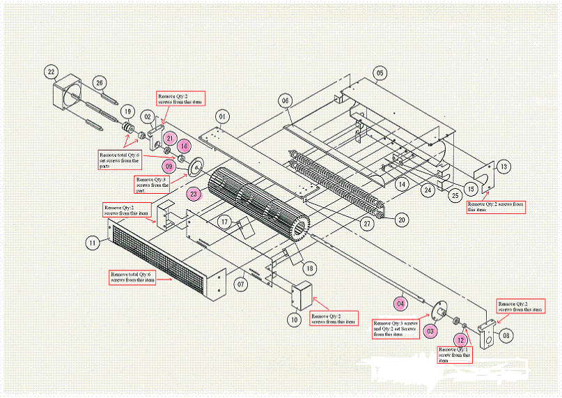
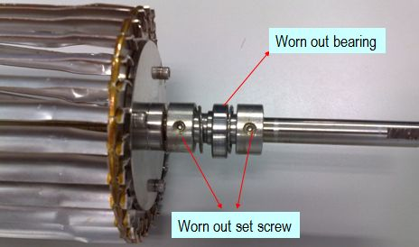

Service History
Subject: Chamber fan blade broken, most probably caused by moving bearing
Handler Model: NS-7080(Xilinx, NS7K-06)
Controller: RC520
Date: 22 Sept 2008
Symptom
Chamber fan blade broken issue, most probably caused by moving bearing.
Action
Dismantle the chamber fan unit according to the diagram

Cause
Dismantle the chamber fan unit, together with shaft and fan blades. The set screws on the 2 bushings (item 16) are worn out. The cause of the chamber fan blade broken issue is confirmed due to the worn out bearing (item 21). The bearing housing (item 2) in the centre has been taken out (not in picture).
Hopefully the spares come as a whole assembly, which includes the bearing, shaft (item 4), bushing with set screws and fan blades (item 23).

Remarks
20 Oct 2008:
Installation of Chamber Fan Unit on NS-06. Functional check on the chamber fan in Ambient and Hot modes. Running check carried out.
1) Part Name: Chamber Impeller Main (Chamber Fan) (comes with bearings)
Spec: H010Z266
Code: R33N700008400K
2) Part Name: Bearing(for Chamber Fan) (1set=2pcs)
Spec: 6900ZZC3 / POSOOVC (7NS10-21)
Code: R35N700009700K
Maker: JTEKT CORPORATION (Koyo)